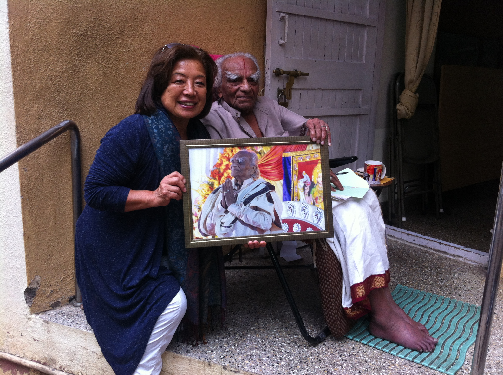
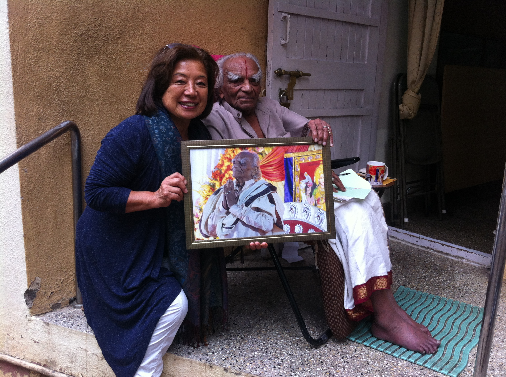

Namaskar Geetaji and Prashantji, and Pandu,
I apologize my missing the deadline for your collection for Guruji's birthday celebration on Dec. 14, 2015. Hope it can be still included.
Here are my photo I love most on his 95th birthday.....
I am one of the novice practitioner or Iyengar Yoga close to 10 years. Whenever I hear my teachers talk about what Guruji said or instructed or whatever their quotes were, there has been the calling, " Go direct to masters to hear his voice and instruction!!' I realized my body has changed in her 10 day intensive retreat: I decided to retire from my teaching position to go to the Institute before getting too old. I was so excited to find Guruji in the Lobby for the first time. Then I saw the family in Diwali Holiday in Kare Institute and finally I had a private time with Guruji to present him my "door size" photo for the Bellhure. When I heard his instruction to senior teachers in practice hall for three months, his instruction, terminology and level of his expertise was beyond my understanding. I realized Guruji spent more than 85 years to develop his Iyengar Yoga through his body. I was so determined to get closer to him day by day, knowing he is ONLY ONE OF THE KIND.
The world knows he brought his Yoga to the world, but one thing we should not forget and every practitioner and teachers have to hand down his sincere personality--" humility, humbleness and compassion" to each every one of us.
He greets every one of us in the court yard, however, what changed my life to follow Guruji was his words when I presented the large photo for Bellhure: "Thank you so much for taking time. You are so kind to think of this and keep that always with you." What a great heart he has to appreciate one tiny thing compared to HUGE achievement he accomplished. Guruji, thank you and you live forever in my heart.
Hiroko Kazama
Geetaji and Prashantji, thank you so much for your dedication to community. I hope if you can include in your assessment meeting any type of community service we are obliged to complete as part of respecting Guruji's achievement.
It can be once a year on guruji's birthday and donate that proceed to the Institute to expand the hall.
Thank you,
 
